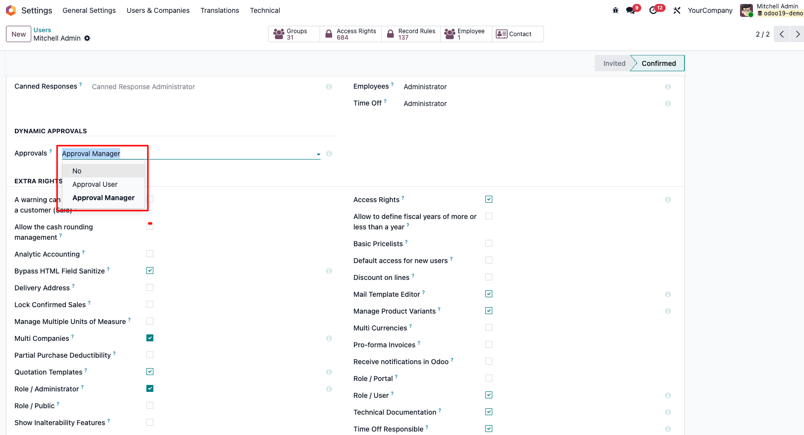
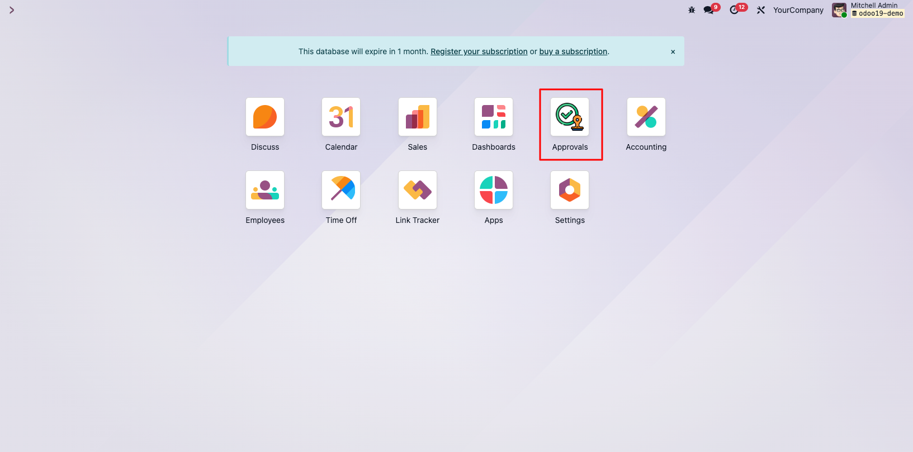
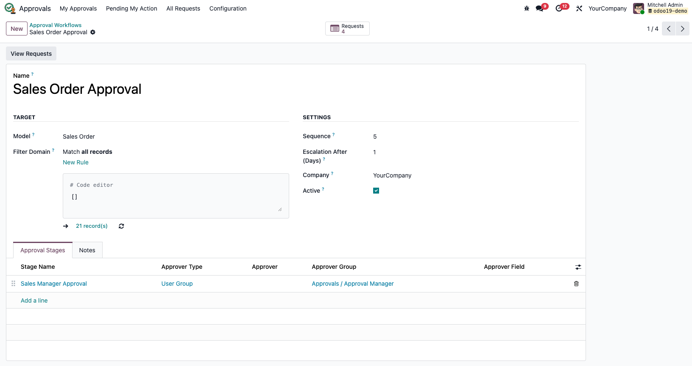
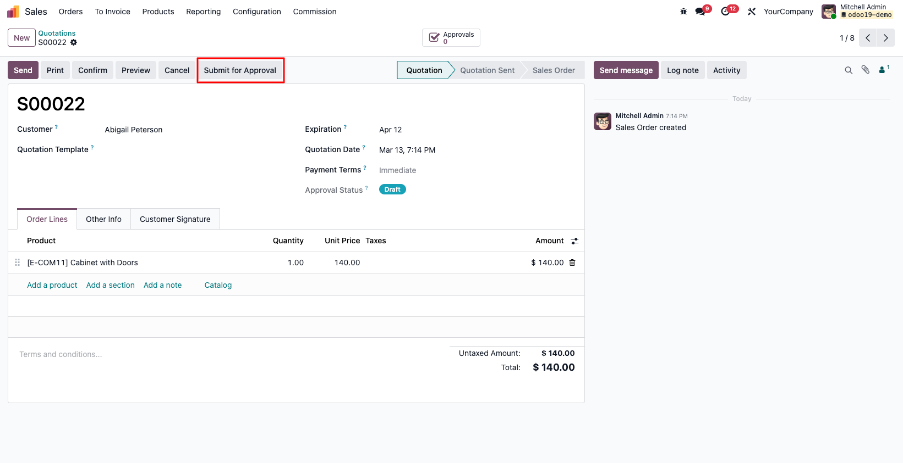

Dynamic Approval Workflow Engine
A reusable, configurable multi-stage approval engine for any Odoo model.
Configure once, enforce everywhere, and keep a full audit trail.
Odoo 19
Community & Enterprise
No Per-Model Workflow Coding
∞
Models Supported
Use the same approval engine across any supported Odoo model.
3
Approver Types
Specific user, security group, or dynamic user field.
100%
Audit Covered
Every approval decision is tracked with full history.
0
Workflow Code Per Model
Configure workflows from the UI without per-model approval logic.
What This Module Does
Stop building approval logic one module at a time. Define your approval chains in the UI,
and let the engine handle submission, routing, stage progression, notifications, escalation,
and approval history automatically.
Multi-Stage Sequential Workflows
Configure unlimited stages per workflow. Stage 2 does not start until Stage 1 is completed.
Domain-Based Routing
Apply different workflows to different records of the same model using standard Odoo domains.
Three Flexible Approver Types
Use a specific user, a security group, or a dynamic user field directly from the document.
Immutable Audit Trail
Every approval, rejection, and return action is recorded with user, time, and reason.
Escalation and Deadlines
Flag overdue requests and notify escalation contacts through a scheduled cron job.
Live Dashboard
A dedicated dashboard gives requesters and approvers clear visibility into pending work.
How It Works
1. Configure Workflow
Select the target model, add an optional domain, and define escalation timing.
2. Add Stages
Define the sequence and approver type for each stage in the workflow.
3. Submit Document
The engine creates the approval request, activates the first stage, and sends notifications.
4. Approve or Return
Approvers act from the dashboard or request form, and the document advances automatically.
Document State Lifecycle
Every document moves through a clear approval lifecycle, from initial submission to final decision.
Draft documents can be submitted for approval.
Pending Approval blocks confirmation until approvers act.
Approved documents can proceed.
Rejected documents are blocked.
Returned documents can be edited and resubmitted.
See It in Action
Below is a complete walkthrough from configuration to approval using screenshots from an Odoo 19 environment.
Phase 1. Setup and Configuration
1. Grant User Access Rights

Assign Approval Manager or Approval User access before using the module.
2. Open the Approvals App

The app becomes available after installation for users with the proper role.
3. Configure Approval Workflows

Create workflows for any model without writing approval logic per model.
4. Inspect Workflow Configuration

Review model, domain, escalation days, and stage setup in one form.
Phase 2. Submitting a Document
5. Submit the Sales Order for Approval

The Submit for Approval button appears while the document is still editable.
6. Order is Now Pending Approval

The status badge changes and a linked approval request is created automatically.
7. Confirmation is Blocked Until Approved

The engine prevents confirmation while the request is still waiting for approval.
Phase 3. Dashboard and Decision
8. My Approvals Dashboard

Approvers can filter, review, and act on pending requests from one place.
9. Review and Act on the Request

Approve, Reject, or Return to Requester with full context and audit history.
Phase 4. Full Audit Trail
10. All Approval Requests

Managers can review the full lifecycle across all requests and statuses.
Three Ways to Define Approvers
Specific User
Always route a stage to a fixed Odoo user.
Example: CFO approval
Security Group
Route a stage to a group, with support for any member or all members.
Example: Sales Managers group
Dynamic Field
Resolve the approver from a user field on the document itself.
Example: Assigned salesperson or direct manager
Complete Audit Trail
Every decision is logged with the stage, approver, action, and reason.
This makes the module suitable for internal controls, compliance review, and dispute handling.
| Date and Time |
Stage |
Approver |
Action |
Reason |
| 2025-03-10 09:14 | Sales Manager Approval | John Smith | Approved | - |
| 2025-03-10 14:22 | Finance Review | Jane Doe | Returned | Missing cost breakdown |
| 2025-03-11 10:00 | Sales Manager Approval | John Smith | Approved | - |
| 2025-03-11 15:30 | Finance Review | Jane Doe | Approved | - |
| 2025-03-12 08:05 | CEO Sign-off | Ahmad Al-Sharour | Approved | - |
Built for Every Team
Sales Orders
Prevent order confirmation until the correct approval chain is completed.
Purchase Orders
Require manager and finance sign-off before confirming procurement documents.
Employee Expenses
Route requests dynamically based on the employee and their reporting structure.
Leave Requests
Use different approval policies by leave type, duration, or department.
Manufacturing Orders
Require operational, quality, or safety approval before production starts.
Custom Models
Enable approval flows on custom business objects with a reusable mixin.
Technical Specifications
| Odoo Version | 19.0 |
|---|
| Module Version | 1.0.0 |
|---|
| Edition | Community and Enterprise |
|---|
| License | LGPL-3 |
|---|
| Dependencies | base, mail, base_automation, sale |
|---|
| Frontend | OWL |
|---|
| Multi-Company | Supported |
|---|
| Demo Data | Included |
|---|
| Author | Abdalrahman Shahrour |
|---|
Developer Integration Guide
Any model can join the approval engine by inheriting the mixin, adding the dependency,
exposing the approval fields in the form, and creating an approval workflow configuration.
1. Add the mixin to your model
from odoo import _, api, fields, models
from odoo.exceptions import UserError
class MyModel(models.Model):
_name = "my.model"
_description = "My Model"
_inherit = [
"approval.mixin",
"mail.thread",
"mail.activity.mixin",
]
2. Add the dependency in the manifest
{
"name": "My Module",
"version": "19.0.1.0.0",
"depends": [
"dynamic_approval_workflow",
"mail",
],
}
3. Add the submit button and status badge in the form view
<button name="action_submit_for_approval"
type="object"
string="Submit for Approval"
class="btn-secondary"
invisible="state != 'draft' or approval_state not in ('draft', 'returned')"/>
<field name="approval_state"
readonly="1"
widget="badge"/>
4. Gate the final confirmation action
def action_confirm(self):
for record in self:
config = record._get_approval_config()
if not config:
continue
if record.approval_state == "approved":
continue
if record.approval_state in ("draft", "returned"):
raise UserError(_("Submit \"%s\" for approval before confirming.") % record.display_name)
if record.approval_state == "pending_approval":
raise UserError(_("\"%s\" is still awaiting approval.") % record.display_name)
if record.approval_state == "rejected":
raise UserError(_("\"%s\" was rejected. Return to draft and resubmit.") % record.display_name)
return super().action_confirm()
Ready to Bring Order to Your Approvals?
Install once, configure in minutes, and use one approval engine across sales, purchasing,
HR, manufacturing, and custom models.
No per-model custom workflow logic
Full audit trail
Reusable on any supported model
Multi-company ready
Dynamic Approval Workflow v19.0.1.0.0 | LGPL-3 | Built by Abdalrahman Shahrour